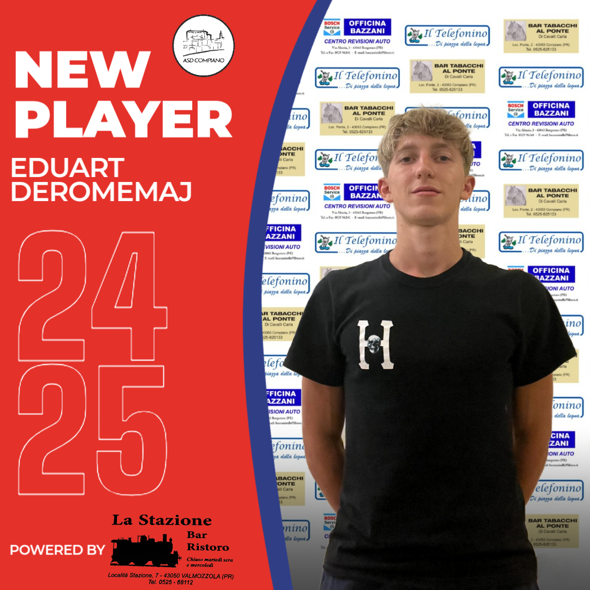
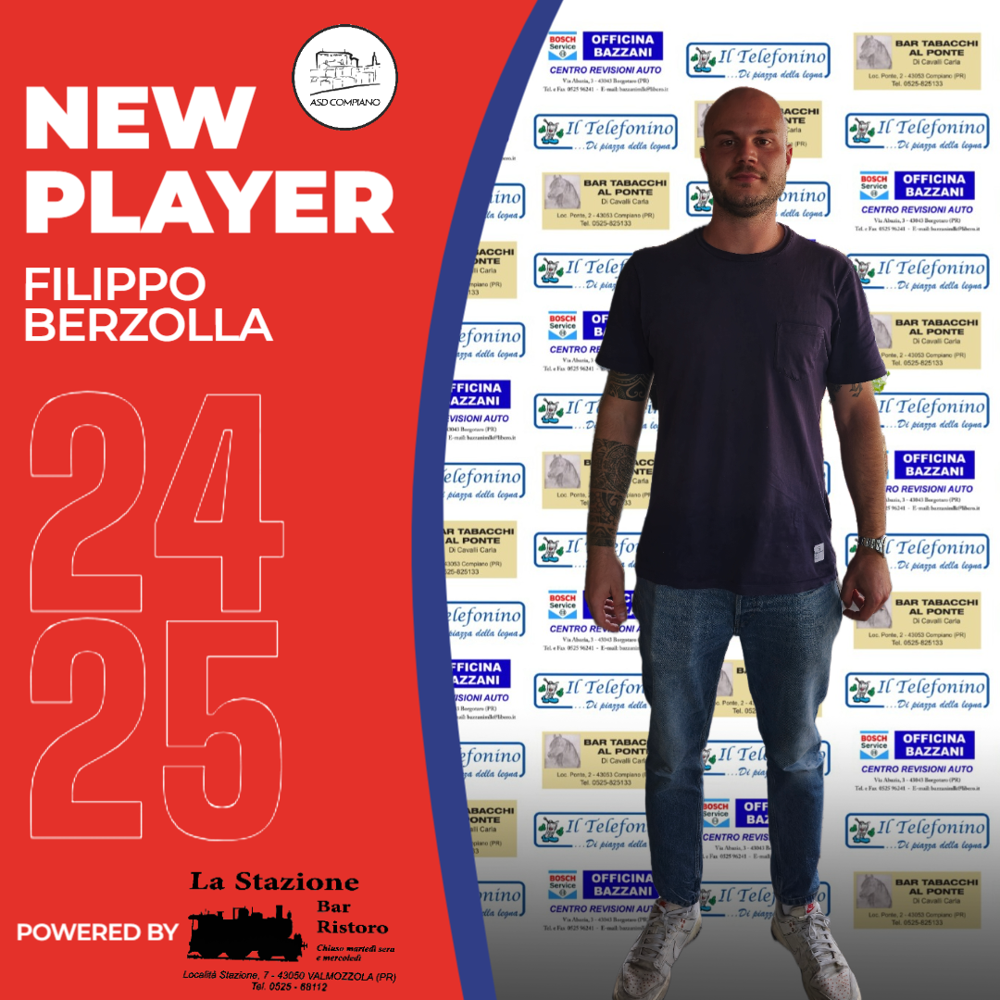

Si cerca di completare la rosa con Speroni Edoardo. Il giovane terzino classe '05
in uscita dalla Valtarese. Già pronti, invece, agli ordini di Mister Depietri: Squeri Manuel (att) dalla
Valtarese,
Donati Mattia (att) e
Romeo Alex (att) arrivati dal Ghiare e Micheli Derek (att) dalla Bedoniese UTD.
Per quanto riguarda le partenze invece ci hanno salutato Mocellin Yuri (att) e Serpagli Francesco (dif)
unitisi alla Bedoniese UTD, Giacopazzi Andrea (att) direzione Valgotra. Tambini Tommaso (att) e
Piscina Matteo (dif), agli addii anche loro, stanno ancora
scegliendo la miglior destinazione.
In bocca al lupo a tutti per la nuova stagione!
29 luglio
Arriva l'ufficialità per un altro rinforzo messo a disposizione di Mister Depietri. Edoardo Speroni
(dif)
chiude ufficialmente il mercato in entrata (forse...). Un grande in bocca al lupo al giovane che arriva in
prestito
dalla Valtarese.
28 agosto
Come un fulmine a ciel sereno viene tesserato il classe 2005 Eduart Deromemaj (dif). Svincolatosi dal
Solignano dopo
poche settimane, Eduart decide, dopo aver parlato con il Mister e il DS, di sposare il nostro progetto.
Terzino dalla grande forza fisica
e adattabile anche come centrale di difesa, sarà una pedina molto importante per nostra la squadra.

30 agosto
Ufficializziamo un altro grande acquisto in casa Compiano, Filippo Berzolla. Attaccante di grande esperienza,
anche tra i professionisti, arriva all'ultimo respiro alla corte di Mister Depietri, che già lo aveva allenato
a Bardi. Un innesto che ci farà molto comodo, soprattutto dopo il brutto infortunio capitato a Tommaso Delchiappo,
che lo terrà ai box per lungo tempo. In bocca al lupo Tommy, ti aspettiamo... e bevenuto Filippo!!!

.png)